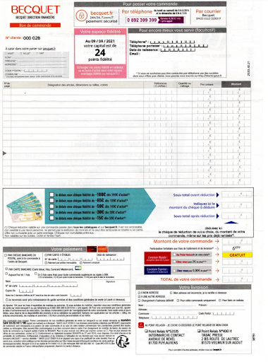

Compétence : Gérer des données de l’information
Dans cette compétence le but était d'apprendre comment gérer et organiser des données, ainsi que comment mettre en place des bases de données, pour illustrer ceci je vais vous montrer mon évolution au cours de mes années au sein de l'IUT à l'aide de projets qui me serviront d'exemples.
SAÉ (situation d'apprentissage et d'évaluation) : Création d’une base de données
Le Niveau 1 de la compétence est de savoir :
- Mettre à jour et interroger une base de données relationnelle
- Visualiser des données
- Concevoir une base de données à partir d’un cahier des charges
Contexte / Objectifs :
L'objectif de cette SAÉ était de créer une base de données en SQL à partir d'un coupon de commande standard d'une entreprise de meubles.
Difficultés et solutions
Les difficultés rencontrées lors de cette SAÉ furent l'insertion des données et la retranscription du coupon vers la base de données, ainsi que des scripts de vérification qui montrait que certaines choses étaient mal faites
Résultats:
Création de la base de donnée exigée
Données partiellements remplies dans la BD
Scripts de vérification fait mais démontrant les erreurs de nos commandes
SAÉ : Exploitation d’une base de données
Le Niveau 2 de la compétence est de savoir :
- Optimiser les modèles de données de l’entreprise
- Organiser la restitution des données à travers la programmation et la visualisation
- Assurer la sécurité des données
- Manipuler des données hétérogènes
Contexte / Objectifs :
Le but de cette SAÉ était d'exploiter la base de données donnée afin d'en extraire les données importantes
et de les exporter sur Jupyter un outil pour faire des notebooks
afin de faire de la représentation statistiques
à travers différents graphiques et un tableau de bord. Il a fallut également faire la base de données à
l'aide d'un diagramme de classe sur l'outil WinDesing.
Difficultés
La difficulté principale lors de cette SAÉ fut la prise en main de WinDesing et Jupyter
Résultats: